운영체제 입력을 공통 상태로 변환
Linux는 /dev/input 이벤트와 ioctl을 사용하고 macOS는 optional pygame을 사용합니다. 동일한 axes·buttons 상태로 변환해 웹 UI를 공유하지만 장치 매핑과 권한, 운영체제별 동작은 별도로 확인해야 합니다.
Hardware / Diagnostics
조이스틱의 축·버튼 입력과 연결 상태를 확인하는 Python 진단 도구입니다. 운영체제별 입력을 처리해 웹 UI에 전달했습니다.
Architecture / Flow


조이스틱이 보내는 축·버튼 값과 연결 상태를 눈으로 확인할 필요가 있었습니다. 장치 입력부터 화면 표시까지의 흐름을 관측할 수 있는 진단 도구를 만들었습니다.
Linux 사용자 공간에서 입력 이벤트를 읽고 장치의 축 범위를 정규화했습니다. macOS 입력 처리도 구성해 운영체제별로 다른 입력을 웹 화면에 전달하는 흐름을 다뤘습니다.
FastAPI·WebSocket을 통해 입력 상태를 웹 UI에 전달했습니다. 장치 연결 여부를 확인하고, 실제 입력이 화면에서 어떻게 표시되는지 살펴볼 수 있도록 구현했습니다.
조이스틱이 연결되지 않은 경우 시뮬레이션으로 전환하도록 만들었습니다. 실제 장치 입력과 모의 상태를 구분하면서 UI와 데이터 전달 흐름을 확인할 수 있도록 구성했습니다.
Follow the data
런처가 Uvicorn을 background thread로 시작하고 /api/status 확인 후 브라우저를 엽니다.
Linux에서는 읽을 수 있는 event 노드별 스레드를 시작하고 원시 이벤트를 변환합니다. macOS에서는 pygame으로 장치 상태를 읽습니다.
get_state가 공통 JSON 상태를 제공하고 WebSocket endpoint가 현재 snapshot을 주기적으로 전송합니다.
프론트엔드가 연결/시뮬레이션 상태, 축·버튼·마지막 이벤트를 표시하고 소켓이 닫히면 재연결합니다.
Engineering decisions
Linux는 /dev/input 이벤트와 ioctl을 사용하고 macOS는 optional pygame을 사용합니다. 동일한 axes·buttons 상태로 변환해 웹 UI를 공유하지만 장치 매핑과 권한, 운영체제별 동작은 별도로 확인해야 합니다.
Linux 장치별 worker thread가 최신 값을 갱신하고 FastAPI는 각 클라이언트에 약 30Hz로 상태 snapshot을 보냅니다. UI는 단순해지지만 모든 이벤트를 손실 없이 기록하는 스트림은 아닙니다. last_event 하나와 브라우저의 최대 50개 로그로는 완전한 이벤트 이력을 보장하지 않습니다.
장치가 없으면 시뮬레이션을 생성하고 simulation_mode를 UI 배지로 표시합니다. 하드웨어 없이 상태 전달·화면 구성을 확인할 수 있지만 실제 장치의 정확도·연결 지연을 검증하는 테스트는 별도입니다.
코드 기준 733b3aa · 구조와 주요 실행 경로를 정적으로 검토했습니다.